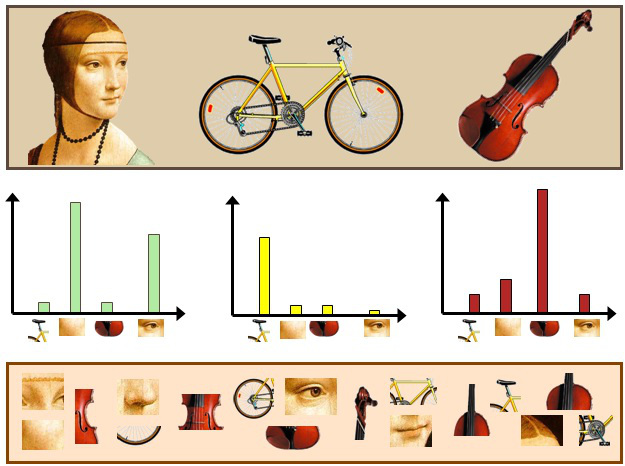

基于BOW实现垃圾邮件分类
上一节我们基于朴素贝叶斯的词频统计，做了垃圾邮件分类，这一节我们采用BOW模型，在相同数据集上使用BOW模型再次进行分类任务，并且使用各种经典的机器学习模型。
jieba加入自定义词典
首先我们来做一个自定义分词功能，以备后面需要之用。看下面这段代码，这段代码展示了如何在jieba中加入自定义分词：
import jieba
text = '平安银行是一家总部设在深圳的全国性股份制商业银行（SZ000001）。\
其前身深圳发展银行是中国内地首家公开上市的全国性股份制银行。中国平安及其控股子公司为本行控股股东。\
截至2021年6月，本集团在职员工共37,384 人，通过101家分行及1110家营业机构为客户提供多种金融服务。'
result = jieba.lcut(text) # cut返回一个generater，lcut返回一个list
print(result)
jieba.load_userdict(r'my_dict.txt')
result = jieba.lcut(text)
print(result)其中my_dict.txt为我们的自定义词典，一行一个自定义词，这里的内容为：
平安银行运行代码可知，jieba原本会将平安银行分成两个词平安和银行，加入自定义词典之后就不会了。
BOW模型与scikit-learn调用


本着奥卡姆剃刀的原则，我们就不自己实现算法了，直接调用sklearn中的BOW模型实现CountVectorizer。
在分类器方面，我们在这里采用比较经典的四种机器学习分类器：
- 朴素高斯贝叶斯：一种基于词频统计、概率先验、高斯函数的分类器；
- 逻辑回归：与传统线性回归稍有区别的一种回归模型，常用于二分类；
- SVC：支持向量机SVM的分类应用模型；
- XGBoost：一种基于决策树的分类算法。
我们在上一篇代码的基础上来进行修改。整体代码如下。
import math
import re
import pandas as pd
import codecs
import jieba
from sklearn.preprocessing import StandardScaler
from sklearn.feature_extraction.text import CountVectorizer
from sklearn.model_selection import train_test_split
from sklearn import linear_model
from sklearn.naive_bayes import GaussianNB
from sklearn.svm import SVC
from xgboost import XGBClassifier
from xgboost import plot_importance
from sklearn import metrics
def load_formatted_data():
"""
加载格式化后的标签-路径列表
spam列为1代表是垃圾邮件，0代表普通邮件
path列代表该邮件路径
:return:(DataFrame)index
"""
# 加载数据集
index = pd.read_csv('index', sep=' ', names=['spam', 'path']) # 读入是两列，一列spam 一列path
index.spam = index.spam.apply(lambda x: 1 if x == 'spam' else 0) # 数据标签，标签为spam的设置为1 否则设置为0
index.path = index.path.apply(lambda x: x[1:]) # 更改文件路径
return index
def load_stop_word():
"""
读出停用词列表
:return: (List)_stop_words
"""
with codecs.open("stop", "r") as f: # 载入停用词列表
lines = f.readlines() # 读入所有行，得到一个包含多个字符串的list，一行是一个字符串
_stop_words = [i.strip() for i in lines] # 舍弃掉所有换行符
return _stop_words
def get_mail_content(path, stop_words_list):
"""
遍历得到每封邮件的词汇字符串
:param path: 邮件路径
:return:(Str)content
"""
with codecs.open(path, "r", encoding="gbk", errors="ignore") as f: # 以gbk编码打开文件，忽略错误
lines = f.readlines() # 读入所有行，得到一个包含多个字符串的list，一行是一个字符串
for i in range(len(lines)):
if lines[i] == '\n':
# 去除第一个空行，即在第一个空行之前的邮件协议内容全部舍弃
lines = lines[i:]
break
content = ''.join(''.join(lines).strip().split())
# strip()是丢弃换行符，split()是按照空格分隔开（起到剔除多个空格只留下一个空格的作用），然后再join在一起
# print(content)
content = re.findall(u"[\u4e00-\u9fa5]", content) # 只保留汉字
content = ''.join(content) # 拼起来
word_list_temp = jieba.cut(content) # 使用jieba进行分词
word_list = ''
for word in word_list_temp:
if word != '' and word not in stop_words_list: # 去掉空词和停止词
word_list += word + ' '
return word_list[:-1]
if __name__ == '__main__':
index_list = load_formatted_data()
stop_words = load_stop_word()
# get_mail_content(index_list.path[0])
print('邮件内容读取与分词')
index_list['content'] = index_list.path.apply(lambda x: get_mail_content(x, stop_words)) # 对content列使用函数，得到邮件内容
words = index_list['content'].tolist()
vectorizer = CountVectorizer(max_features=4000, min_df=100) # 词典最大长度4k，频率高于100的词才统计
vectorizer.fit(words)
print("bag_of_words模型的总词汇数量：", len(vectorizer.get_feature_names()))
# 分割数据集
data = vectorizer.transform(index_list['content'].values).toarray()
label = index_list.spam.values
X_train, X_test, y_train, y_test = train_test_split( data, label, test_size=0.2)
# 标准化
scaler = StandardScaler()
X_train = scaler.fit_transform(X_train)
X_test = scaler.transform(X_test)
classifier = SVC(max_iter=1000)
classifier.fit(X_train, y_train)
y_pred = classifier.predict(X_test)
print('SVM算法的分类准确率为{}'.format(metrics.accuracy_score(y_test, y_pred)))
classifier = XGBClassifier()
classifier.fit(X_train, y_train)
y_pred = classifier.predict(X_test)
print('XGBoost算法的分类准确率为{}'.format(metrics.accuracy_score(y_test, y_pred)))
classifier = GaussianNB()
classifier.fit(X_train, y_train)
y_pred = classifier.predict(X_test)
print('朴素贝叶斯算法的分类准确率为{}'.format(metrics.accuracy_score(y_test, y_pred)))
classifier = linear_model.LogisticRegression()
classifier.fit(X_train, y_train)
y_pred = classifier.predict(X_test)
print('逻辑回归算法的分类准确率为{}'.format(metrics.accuracy_score(y_test, y_pred)))一些具体的参数我们后面要用的话可以继续深入调节，这里都尽量只使用默认参数。实验结果可知，在20%数据用作训练姐，80%数据用作测试集的分类准确率大致如下：
| SVC模型 | 朴素高斯贝叶斯模型 | 逻辑回归模型 | XGBoost模型 |
|---|---|---|---|
| 63.94% | 88.56% | 98.93% | 98.85% |
TfidfVectorizer与HashingVectorizer
sklearn中还有另外两种类似于BOW模型的TfidfVectorizer和HashingVectorizer：
TfidfVectorizer即TF-IDF算法，认为一个词语在一篇文章中出现次数越多，同时在所有文档中出现次数越少，越能够代表该文章；HashingVectorizer主要是采用哈希算法，在词库很大的时候，能将词向量进行哈希操作，便于存储。
二者基本用法如下：
from sklearn.feature_extraction.text import TfidfVectorizer
from sklearn.feature_extraction.text import HashingVectorizer
corpus = [
'This is the first document.',
'This document is the second document.',
'And this is the third one.',
'Is this the first document?',
]
vectorizer = TfidfVectorizer()
vectorizer.fit(corpus)
vectorizer.transform(corpus).toarray()
vectorizer = HashingVectorizer()
vectorizer.fit(corpus)
vectorizer.transform(corpus).toarray()直接替换上一节代码中的CountVectorizer部分即可。
怎么样，是不是很简单呀😃😃😃加油吧，小仙女~